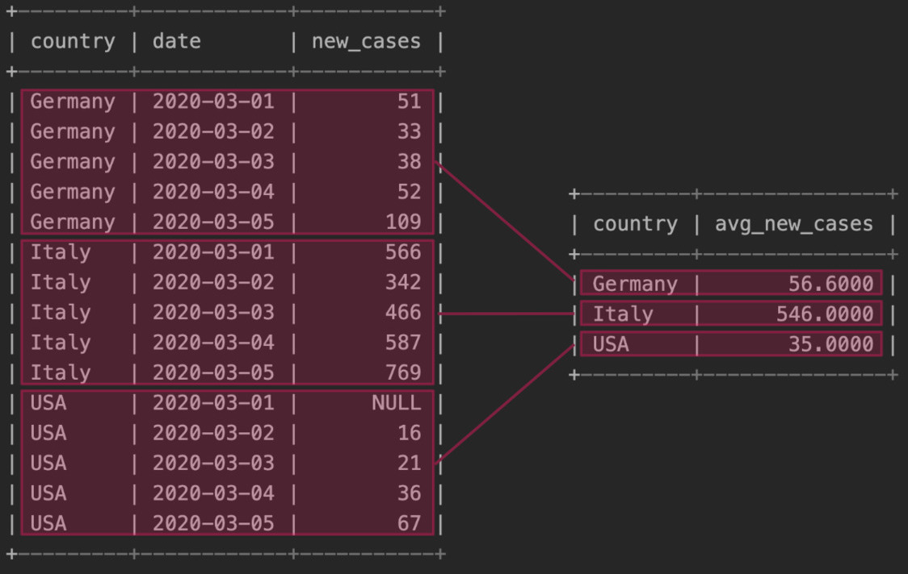
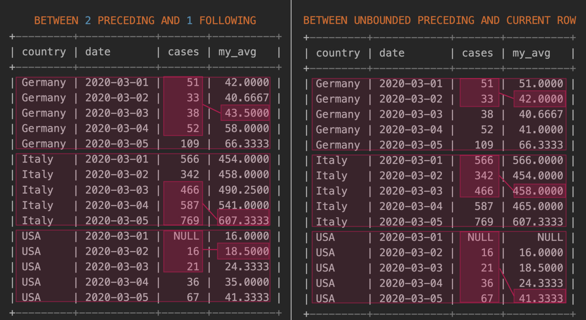

When we manipulate data from a SQL database, we often need to compute operations that
depend on values scattered across several rows. For instance, it is important to be able to compute
sums or averages. In this post we will see how the SQL clauses GROUP BY and
PARTITION BY enable us to do that.
To clarify the usage of these functions, let's consider the table covid
containing the number of new COVID-19 cases by day in a few countries.
mysql> SELECT *
FROM covid
ORDER BY date, country;
+---------+------------+-----------+
| country | date | new_cases |
+---------+------------+-----------+
| Germany | 2020-03-01 | 51 |
| Italy | 2020-03-01 | 566 |
| USA | 2020-03-01 | NULL |
| Germany | 2020-03-02 | 33 |
| Italy | 2020-03-02 | 342 |
| USA | 2020-03-02 | 16 |
| Germany | 2020-03-03 | 38 |
| Italy | 2020-03-03 | 466 |
| USA | 2020-03-03 | 21 |
| Germany | 2020-03-04 | 52 |
| Italy | 2020-03-04 | 587 |
| USA | 2020-03-04 | 36 |
| Germany | 2020-03-05 | 109 |
| Italy | 2020-03-05 | 769 |
| USA | 2020-03-05 | 67 |
+---------+------------+-----------+
In this blog we will see how to use GROUP BY and PARTITION BY to solve three
different use cases.
GROUP BY: Aggregate Functions In SQL, aggregate functions operate on sets of values, returning a single value. Examples of commonly used aggregate functions are the following.
COUNT(*): number of rows retrieved.AVG(col): average of values in col.SUM(col): sum of values in col.MAX(col), MIN(col): max / min value in col.
The clause GROUP BY is used together with aggregate functions to define on which subset
of rows the operation is to be computed. For Use Case 1 we want to know the
average number of new cases—which can be computed using AVG(new_cases)—for each
country—which can be achieved using GROUP BY country—so the query we need is
the following.
mysql> SELECT country, AVG(new_cases) avg_new_cases
FROM covid GROUP BY country
ORDER BY country;
+---------+---------------+
| country | avg_new_cases |
+---------+---------------+
| Germany | 56.6000 |
| Italy | 546.0000 |
| USA | 35.0000 |
+---------+---------------+In graphical terms, this is how this query operates. 
Sometimes we just want to compute an operation on the whole table, in which case we have to omit the
GROUP BY clause. For instance, to compute the total number of new cases in any country
in this period of five days, we can use the following query.
mysql> SELECT SUM(new_cases) tot_cases
FROM covid;
+-----------+
| tot_cases |
+-----------+
| 3153 |
+-----------+Finally, it may be useful to have at the same time the results aggregated by country—what you
get by
GROUP BY—as well as the results aggregated across all rows. This can be achieved
using
the clause WITH ROLLUP. As an example, the following query computes the total number of
new cases per country and overall (this latter goes under the special label NULL).
mysql> SELECT country, SUM(new_cases) tot_cases
FROM covid
GROUP BY country
WITH ROLLUP
ORDER BY country;
+---------+-----------+
| country | tot_cases |
+---------+-----------+
| NULL | 3153 |
| Germany | 283 |
| Italy | 2730 |
| USA | 140 |
+---------+-----------+PARTITION BY: Window Functions In SQL, window functions operate by considering, for each row of a given query, a set of rows related to that row. With a few exceptions, virtually all aggregate functions can also be used as window functions. On top of those, SQL supports window functions that are nonaggregate functions, of which the commonly used are the following.
ROW_NUMBER(): index of current row within a partition.RANK(): same as ROW_NUMBER(col), but if an entry is repeated in a
partition their index is different while their rank is the same.
FIRST_VALUE(col), LAST_VALUE(col), NTH_VALUE(col): first / last / n-th element in
a partition.
LEAD(col), LAG(col): value of the previous / next row in a partition.
If GROUP BY is used for aggregate functions to specify the set of rows to be aggregated,
for window function we have to use the OVER (window_spec) clause to specify how to
partition rows into groups to be processed by the window function.
The structure of window_spec can be broken down into three components, all of which are
optional. If you don't specify any of the components, the trivial OVER() clause will
take all the rows in the table.
window_spec:
[PARTITION BY col] [ORDER BY col] frame_spec PARTITION BY col works exactly in the same way of GROUP BY, i.e. splits
the
table into various subsets of rows.
ORDER BY col is also nothing new, just a regular clause to sort the rows in each
subset of rows.
window_spec is the third component frame_spec. A
frame specification defines, for each row of a partition, an interval of rows of the partition that should
be considered to apply the window function. The frame specification must be given in the format
frame_spec:
ROWS BETWEEN frame_begin AND frame_endframe_begin and frame_end are to be chosen among the following options.
CURRENT ROW: the current row.UNBOUNDED PRECEDING: the first row in the partition.UNBOUNDED FOLLOWING: the last row in the partition.n PRECEDING: the n-th preceding row in the partition.n FOLLOWING: the n-th following row in the partition.frame_end is just the current row, SQL allows to use
the shorter equivalent clause
ROWS frame_startROWS BETWEEN frame_start AND CURRENT ROWframe_spec, showing how different subset of rows in
the partition are used to compute AVG(new_cases).

So now, after this long discussion on PARTITION BY and window functions, we are finally able
to solve Use Case 2 and Use Case 3!
Let's start with Use Case 2, i.e. computing the cumulative number of new cases per
country on each day. To compute sums of new cases we can use SUM(new_cases). To specify
that we want sums to be computed by country we will use PARTITION BY country. Finally, a
cumulative sum means that our frame must start with the first row of the partition and end with the
current row, we will use ROWS UNBOUNDED PRECEDING—or equivalently ROWS
BETWEEN UNBOUNDED PRECEDING AND CURRENT ROW.
mysql> SELECT country,
date,
new_cases,
SUM(new_cases) OVER (PARTITION BY country
ORDER BY date
ROWS UNBOUNDED PRECEDING) my_avg
FROM covid,
ORDER BY country, date;
+---------+------------+-----------+---------+
| country | date | new_cases | cum_sum |
+---------+------------+-----------+---------+
| Germany | 2020-03-01 | 51 | 51 |
| Germany | 2020-03-02 | 33 | 84 |
| Germany | 2020-03-03 | 38 | 122 |
| Germany | 2020-03-04 | 52 | 174 |
| Germany | 2020-03-05 | 109 | 283 |
| Italy | 2020-03-01 | 566 | 566 |
| Italy | 2020-03-02 | 342 | 908 |
| Italy | 2020-03-03 | 466 | 1374 |
| Italy | 2020-03-04 | 587 | 1961 |
| Italy | 2020-03-05 | 769 | 2730 |
| USA | 2020-03-01 | NULL | NULL |
| USA | 2020-03-02 | 16 | 16 |
| USA | 2020-03-03 | 21 | 37 |
| USA | 2020-03-04 | 36 | 73 |
| USA | 2020-03-05 | 67 | 140 |
+---------+------------+-----------+---------+ AVG(new_cases) and specify the frame to include rows
from previous day to next day so ROWS BETWEEN 1 PRECEDING AND 1 FOLLOWING.
mysql> SELECT country,
date,
new_cases,
AVG(cases) OVER (PARTITION BY country
ORDER BY DATE
ROWS BETWEEN 1 PRECEDING AND 1 FOLLOWING) mov_avg
FROM covid
ORDER BY country;
+---------+------------+-----------+----------+
| country | date | new_cases | mov_avg |
+---------+------------+-----------+----------+
| Germany | 2020-03-01 | 51 | 42.0000 |
| Germany | 2020-03-02 | 33 | 40.6667 |
| Germany | 2020-03-03 | 38 | 41.0000 |
| Germany | 2020-03-04 | 52 | 66.3333 |
| Germany | 2020-03-05 | 109 | 80.5000 |
| Italy | 2020-03-01 | 566 | 454.0000 |
| Italy | 2020-03-02 | 342 | 458.0000 |
| Italy | 2020-03-03 | 466 | 465.0000 |
| Italy | 2020-03-04 | 587 | 607.3333 |
| Italy | 2020-03-05 | 769 | 678.0000 |
| USA | 2020-03-01 | NULL | 16.0000 |
| USA | 2020-03-02 | 16 | 18.5000 |
| USA | 2020-03-03 | 21 | 24.3333 |
| USA | 2020-03-04 | 36 | 41.3333 |
| USA | 2020-03-05 | 67 | 51.5000 |
+---------+------------+-----------+----------+
GROUP BY to compute a single aggregate value (e.g. a
sum, mean, etc.) from each specified set of rows.
WITH ROLLUP to compute also meta-aggregate values.OVER (window_spec) to compute, for each row, a value that depends on a subset of rows
within a
given partition.
window_spec defines how to partition the table with
PARTITION BY, how to sort the rows within each partition with ORDER BY,
and
the frame of rows within the partition to be considered to compute the value of each rows with
ROWS BETWEEN frame_begin AND frame_end.